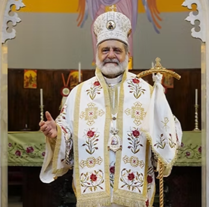
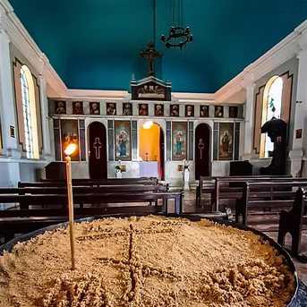
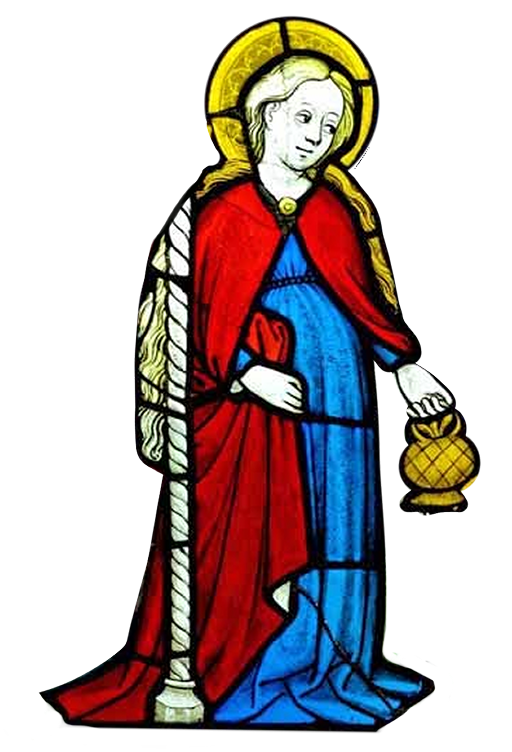
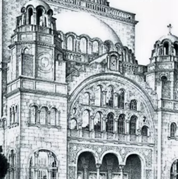
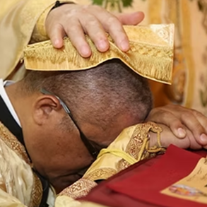
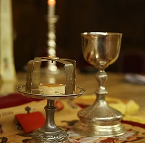
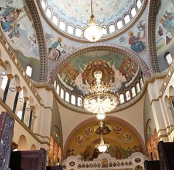
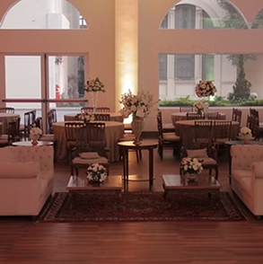

Arcebispo Metropolitano
Conselho Arquidiocesano

"Em Antioquia, pela primeira vez,
foram os discípulos chamados cristãos"
Atos dos Apóstolos 11:26

Santa Dorotéia, virgem e mártir da Capadócia (séc. IV), é conhecida como a santa das flores
. Antes de morrer, enviou milagrosamente rosas e maçãs a um jovem que zombava de sua fé, convertendo-o.


Serviço de tal tal coisa, oferecido e tal tal
Ver maisServiço de tal tal coisa, oferecido e tal tal
Ver mais




Entre em contato, conte sua aflição e receba uma palavra ou oração do Padre Dimitrios Attarian
Pedir Oração